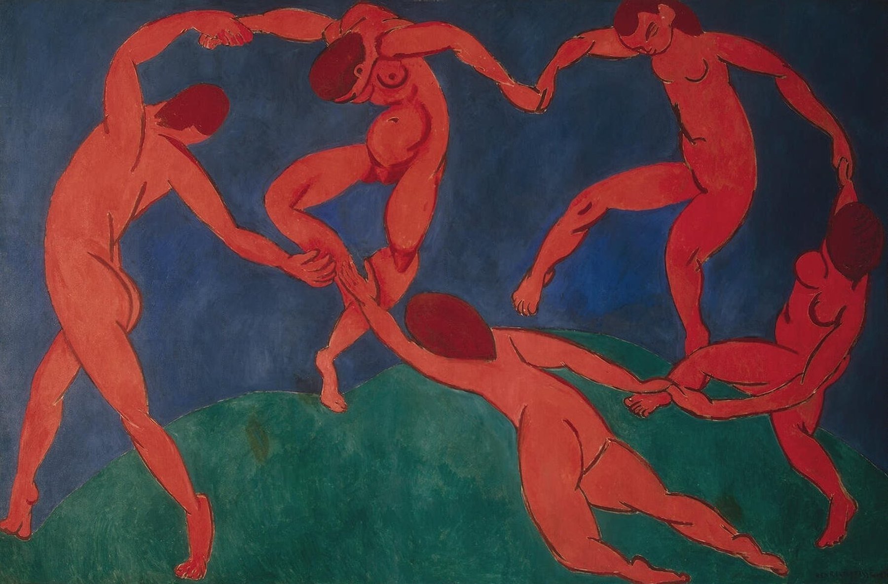
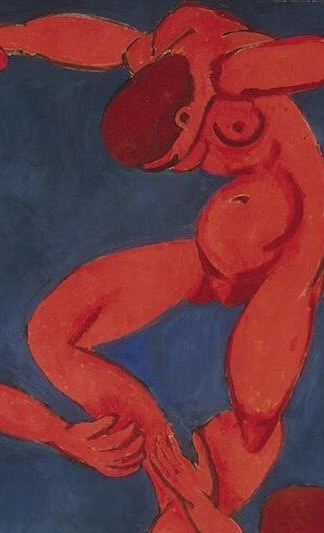
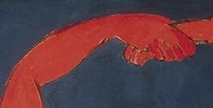
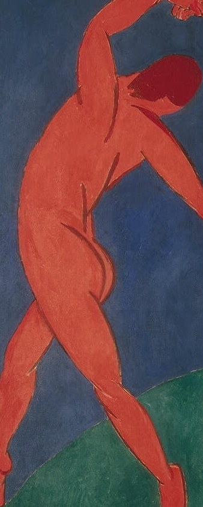
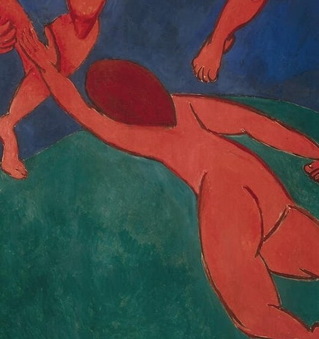
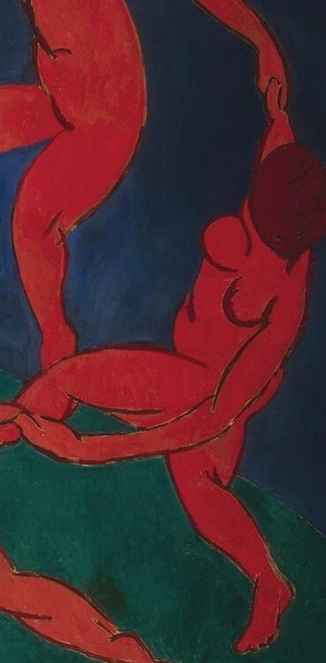
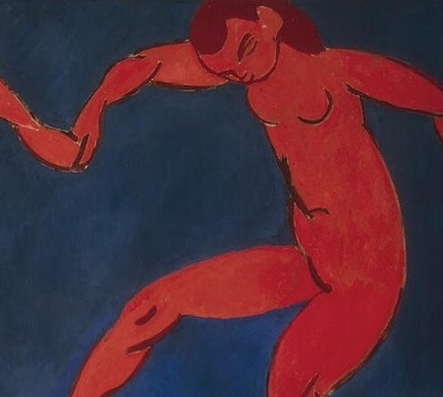
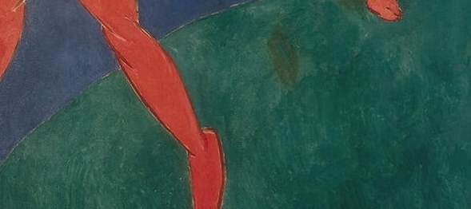
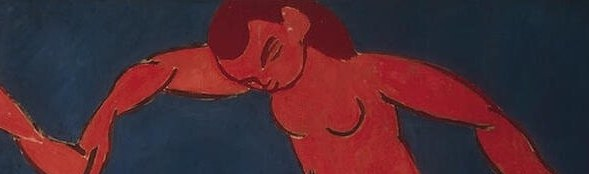

1910 年，马蒂斯为莫斯科收藏家谢尔盖·休金画了一幅三米多宽的画：五个赤红的人体，手拉着手，在蓝与绿之间旋转。它没有故事、没有主角、没有情节——只有一圈还在继续转动的舞。当年的巴黎评论骂它粗野；今天，它被视为现代绘画最重要的转折点之一。
五个人，手拉着手，围成一个还没有闭合的圈。
他们的身体是朱红的，脚下的坡地是绿的，四周是铺满的蓝——马蒂斯把颜色用到了最饱和。
没有人看向画外。他们只看着彼此的手，看着这场还在继续的旋转。
—— 画面解读 · 通行说法
马蒂斯画下的，是「活着」本身：一圈还在转的、停不下来的舞。
画面只有五个人和三种颜色，看似简单。但每个姿势、每一次牵手、每一块颜色，都被反复推敲过——马蒂斯为此画了大量习作。

点击画面中的 ✦ 光点 细看每一处 · 图片来源：Wikimedia Commons（公有领域）
从莫斯科的委托，到巴黎沙龙的争议，再到今天挂在冬宫墙上的经典——这个圆走了很久。
1909–1910 · 莫斯科
俄国收藏家谢尔盖·休金向马蒂斯订下两幅巨作：《舞蹈》与《音乐》，准备挂在他莫斯科宅邸的楼梯上。1910 年，《舞蹈》在巴黎秋季沙龙首次与公众见面。
➤1910 · 巴黎 秋季沙龙
评论界一片哗然：没有透视、没有明暗、人体比例夸张，颜色平涂到近乎刺眼。有人斥之为「粗野」——「野兽派」（Fauvisme）这个名称，当初本是嘲笑。
➤今天 · 圣彼得堡 冬宫
十月革命后，休金的收藏被收归国有。如今《舞蹈》与它的姐妹作《音乐》并挂在冬宫同一面墙上——两幅画，终于在异乡重新聚首。

1905 年夏，马蒂斯在西班牙边境小镇科利乌尔（Collioure）度假时，看过渔民在海滩上围成圆圈跳的一种加泰罗尼亚传统舞——sardana。
那支舞让他念念不忘：一个圆，一群人手拉手，越转越快。此后多年，他反复画「环形的舞」——同一个圆，画了不止一次。
1910 年的这一幅是其中最大的一版。它既是记忆里的沙滩圆舞，也是马蒂斯对「音乐性的绘画」的追求：他要让颜色像音符一样排列，让画面在静止中颤动。
他曾说，自己梦想的是一种「平衡、纯粹、宁静」的艺术——而这张全画最热闹的作品，恰恰是那句话最早的注脚。
※ 「科利乌尔沙滩舞会」是马蒂斯本人多次提及的灵感来源（见其晚年访谈）；1910 年版本的具体创作过程，见于他与休金的往来书信。
马蒂斯没有让五个人做同一个动作。俯、仰、伸、转、跃——五种姿态轮流出现，才让静止的画面转了起来。
头向后仰、双臂高举，把整个圆环撑到最高处。

两只手在最高处相扣，成为整幅画的支点。

低头前倾、伸手拉住同伴，与仰首者构成对照。

前景中背对观众的巨大身影，伸手索要支点。

身体后仰、右腿下探，几乎跌出画面之外。

一拉一垂，在蓝底上划出一道斜线。

一整块不透明的绿，没有细节，只有承托。

几种色阶的蓝拼成，更像幕布而非天空。
1905 年巴黎秋季沙龙，马蒂斯等人的画作因色彩狂放被评论家讥为「野兽」（fauves）。这个贬义词后来反倒成了现代绘画第一个流派的正式名字。
野兽派抛开了传统的明暗与透视，把颜色从「描写对象」的职责中解放出来：红色可以画脸，纯色可以直接并置。色彩第一次成了情绪本身。
俄国商人谢尔盖·休金是马蒂斯最重要的赞助人之一。他订下《舞蹈》与《音乐》两幅巨作，把巴黎最前卫的画带进莫斯科——这批收藏后来成了冬宫现代艺术部分的基石。
马蒂斯一生反复画「环形的舞」：1909 年的习作《舞蹈（一）》今藏纽约现代艺术博物馆，1910 年这一版在冬宫，1930 年代他还为美国巴恩斯基金会创作了大型壁画版本。
《舞蹈》在巴黎秋季沙龙展出，与《音乐》同为休金宅邸楼梯的装饰。争议声中，它成为野兽派最著名的宣言之一。
十月革命爆发。休金的收藏被收归国有，两幅画一同进入国立博物馆体系。
马蒂斯应美国巴恩斯基金会之邀，以同一「环形舞」主题创作大型壁画——这个圆，他又画了一遍，更大、更完整。
《舞蹈》与《音乐》并挂在圣彼得堡冬宫博物馆，是整条参观动线上最著名的一站。每年数百万人从这一圈红色前走过。
从舞蹈、时装到广告，这个「手拉手的圆」被无数次引用与再创作——它成了「欢乐」与「共同体」最简洁的视觉原型之一。